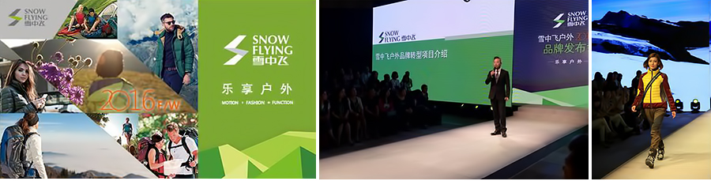

-
雪中飞户外品牌发布暨2016F/W新品发布会与您共同“乐享户外生活”
2016年5月18日，世界名牌波司登集团旗下雪中飞户外品牌发布会在苏州常熟波司登集团总部圆满举行。此次发布会以“飞越”为主题，传承雪中飞原有的“飞得更高”的品牌精神，分享了“乐享户外Enjoy Outdoors”的品牌口号，发布了品牌在过往青春活力、动感时尚的形象基础上转型户外品牌的发展方向。
- 创新：品牌转型引领泛户外新潮流
- 发布会开始，波司登集团副总裁、雪中飞公司总经理柏旗先生向到场各嘉宾介绍了集团战略中的雪中飞户外品牌转型项目，并且表达了打造泛户外生态链的愿景。紧接着供应商与渠道商代表相继上台发言，表达了与公司合作的信心和期待，更赞许了波司登集团的百年企业梦想。
- 共赢：运营管理实现利益共享新局面
- 随后，波司登集团董事局主席、总裁高德康先生在全场的热烈掌声中上台讲话，高先生首先表达了对到场优秀供应商、渠道商的欢迎，强调了“共赢”二字在企业经营与合作中的重要性。同时他坚信雪中飞品牌会超越历史、飞得越来越高。
- 风尚：商品规划打造泛户外新形象
- 整个发布会最吸引眼球的一幕，在商品总监卓玥廷女士向所有来宾发布2016F/W新品企划的同时展开，围绕“都市”、“郊游”、“徒步”及“滑雪”四个系列的主题，模特全方位展示了新品的轻松活力与动感激情。
- 期冀：激情上路展开雪中飞户外新未来
- 下午时间，嘉宾前往波司登集团博物馆进行参观，博物馆陈列的集团全力支持中国登山队登顶珠穆朗玛峰以及2006年，我国运动员韩晓鹏身着雪中飞滑雪服赢得中国冬奥会雪上项目首金的场景真实的展示了雪中飞品牌一路伴随中国户外运动的发展，其品牌包含的户外基因得到了现场专业户外媒体的一致肯定。